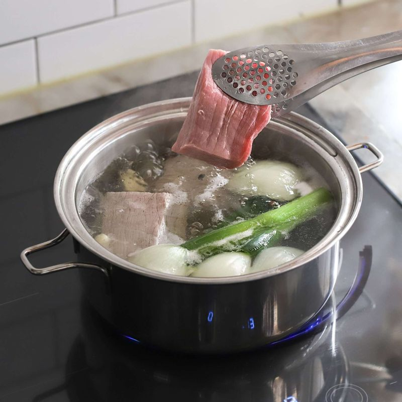

-
쇠고기는 찬물에 30분~1시간 정도 담가 핏물을 빼주세요. 꽈리고추는 깨끗이 씻어 꼭지를 떼고 포크로 구멍을 내주세요.
-

냄비에 고기 삶는 물 재료를 넣어 끓이다가, 국물이 끓으면 고기를 넣고 중불에서 30분 정도 삶아 건져주세요. 고기 삶은 물은 버려주세요.
-
냄비에 조림양념 재료를 넣고 끓으면 삶은 고기를 넣고 15분 정도 중약불에서 끓여주세요.
(tip. 익은 고기를 양념에 넣고 끓여야 고기가 질겨지지 않아요)
-
마늘을 넣어 10분 정도 더 끓이고, 꽈리고추를 넣어 3분 정도 더 끓인 후 불을 꺼주세요.
-
장조림은 한 김 식힌 후 그릇에 담아 보관해주세요.
-

장조림 고기는 미리 찢어 두지 않고, 먹을 때 마다 결대로 먹기 좋게 찢어 내면 간이 세지지 않게 보관할 수 있답니다.